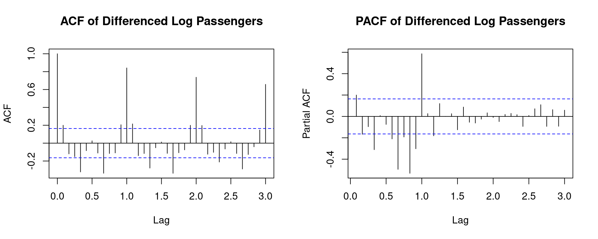
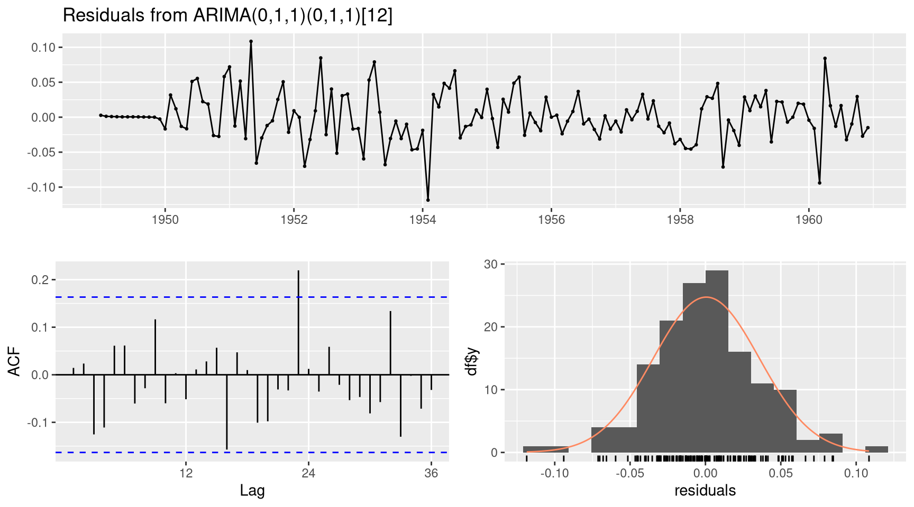

A time series is a sequence of data points collected at successive points in time, typically at equally spaced intervals. Time series analysis is used to understand past behaviour and forecast future values.
Examples: monthly rainfall, daily stock prices, quarterly GDP, weekly sales figures, annual temperature records.
Components of a Time Series
Every time series can be decomposed into four components:
Component
Symbol
Description
Trend (\(T_t\))
Long-run direction
Rising, falling, or flat over time
Seasonality (\(S_t\))
Regular periodic pattern
Repeats within a known period (month, quarter, year)
Cyclical (\(C_t\))
Long-term wave
Multi-year business/economic cycles
Irregular/Noise (\(I_t\))
Random fluctuation
Unexplained random variation
Decomposition Models
Additive model (when seasonal variation is constant):
\[Y_t = T_t + S_t + C_t + I_t\]
Multiplicative model (when seasonal variation grows with trend):
\[Y_t = T_t \times S_t \times C_t \times I_t\]
Key Concepts and Definitions
Stationarity
A time series is stationary if its statistical properties (mean, variance, autocovariance) do not change over time.
Augmented Dickey-Fuller Test
data: AirPassengers
Dickey-Fuller = -7.3186, Lag order = 5, p-value = 0.01
alternative hypothesis: stationary
If p-value > 0.05 → fail to reject \(H_0\) → series is non-stationary → need differencing.
ACF and PACF Plots
# Log-transform to stabilise variance, then first-differencelog_ap <-log(AirPassengers)diff_log_ap <-diff(log_ap, differences =1)par(mfrow =c(1, 2))acf(diff_log_ap, main ="ACF of Differenced Log Passengers", lag.max =36)pacf(diff_log_ap, main ="PACF of Differenced Log Passengers", lag.max =36)

Spikes at seasonal lags (12, 24) indicate seasonal ARIMA is needed.
# View forecast values with confidence intervalsprint(fc)
Point Forecast Lo 80 Hi 80 Lo 95 Hi 95
Jan 1961 450.4224 429.5461 472.3132 418.8895 484.3289
Feb 1961 425.7172 402.8146 449.9219 391.1938 463.2874
Mar 1961 479.0068 450.1386 509.7265 435.5677 526.7781
Apr 1961 492.4045 459.8801 527.2290 443.5416 546.6503
May 1961 509.0550 472.7467 548.1518 454.5866 570.0497
Jun 1961 583.3449 538.8968 631.4591 516.7552 658.5155
Jul 1961 670.0108 615.9149 728.8579 589.0693 762.0740
Aug 1961 667.0776 610.3693 729.0546 582.3280 764.1613
Sep 1961 558.1894 508.4826 612.7552 483.9871 643.7679
Oct 1961 497.2078 451.0221 548.1230 428.3358 577.1537
Nov 1961 429.8720 388.3656 475.8144 368.0412 502.0903
Dec 1961 477.2426 429.4869 530.3083 406.1725 560.7482
Jan 1962 495.9301 441.4199 557.1717 415.0328 592.5957
Feb 1962 468.7289 414.3000 530.3084 388.0942 566.1170
Mar 1962 527.4025 463.0847 600.6535 432.2757 643.4631
Apr 1962 542.1538 473.0479 621.3551 440.1061 667.8634
May 1962 560.4865 486.1084 646.2450 450.8180 696.8336
Jun 1962 642.2823 553.8414 744.8460 512.0656 805.6127
Jul 1962 737.7043 632.5975 860.2747 583.1625 933.2006
Aug 1962 734.4748 626.4582 861.1161 575.8651 936.7700
Sep 1962 614.5852 521.4868 724.3039 478.0561 790.1058
Oct 1962 547.4424 462.1839 648.4284 422.5653 709.2234
Nov 1962 473.3034 397.6439 563.3587 362.6186 617.7735
Dec 1962 525.4600 439.3700 628.4185 399.6627 690.8531
Checking Residuals
# Residuals should look like white noisecheckresiduals(model_auto)

Ljung-Box test
data: Residuals from ARIMA(0,1,1)(0,1,1)[12]
Q* = 26.446, df = 22, p-value = 0.233
Model df: 2. Total lags used: 24
A good model leaves white noise residuals: - No autocorrelation in residuals - Residuals approximately normally distributed - Ljung-Box test p-value > 0.05
Accuracy Metrics
accuracy(model_auto)
ME RMSE MAE MPE MAPE MASE
Training set 0.05140418 10.15504 7.357553 -0.004079016 2.623636 0.229706
ACF1
Training set -0.03689673
Metric
Description
ME
Mean Error
RMSE
Root Mean Squared Error
MAE
Mean Absolute Error
MAPE
Mean Absolute Percentage Error
MASE
Mean Absolute Scaled Error
Lower values = better model fit.
Exponential Smoothing (ETS) — Alternative Approach
model_ets <-ets(AirPassengers)summary(model_ets)
ETS(M,Ad,M)
Call:
ets(y = AirPassengers)
Smoothing parameters:
alpha = 0.7096
beta = 0.0204
gamma = 1e-04
phi = 0.98
Initial states:
l = 120.9939
b = 1.7705
s = 0.8944 0.7993 0.9217 1.0592 1.2203 1.2318
1.1105 0.9786 0.9804 1.011 0.8869 0.9059
sigma: 0.0392
AIC AICc BIC
1395.166 1400.638 1448.623
Training set error measures:
ME RMSE MAE MPE MAPE MASE ACF1
Training set 1.567359 10.74726 7.791605 0.4357799 2.857917 0.2432573 0.03945056
fc_ets <-forecast(model_ets, h =24)accuracy(fc_ets)
ME RMSE MAE MPE MAPE MASE ACF1
Training set 1.567359 10.74726 7.791605 0.4357799 2.857917 0.2432573 0.03945056
ETS models are often competitive with ARIMA and are simpler to interpret.
Summary
Concept
Formula / Description
R Function
Create ts object
ts(data, start, frequency)
ts()
Plot
—
plot()
Decompose
\(Y_t = T_t + S_t + I_t\)
decompose()
Stationarity test
ADF test
tseries::adf.test()
ACF / PACF
\(\rho_k = \gamma_k / \gamma_0\)
acf(), pacf()
Fit ARIMA
\(\text{ARIMA}(p,d,q)\)
arima()
Auto-fit
—
forecast::auto.arima()
Forecast
—
forecast()
Check residuals
Ljung-Box test
checkresiduals()
Time series analysis requires understanding the data’s structure — always plot first, decompose, check stationarity, then model.